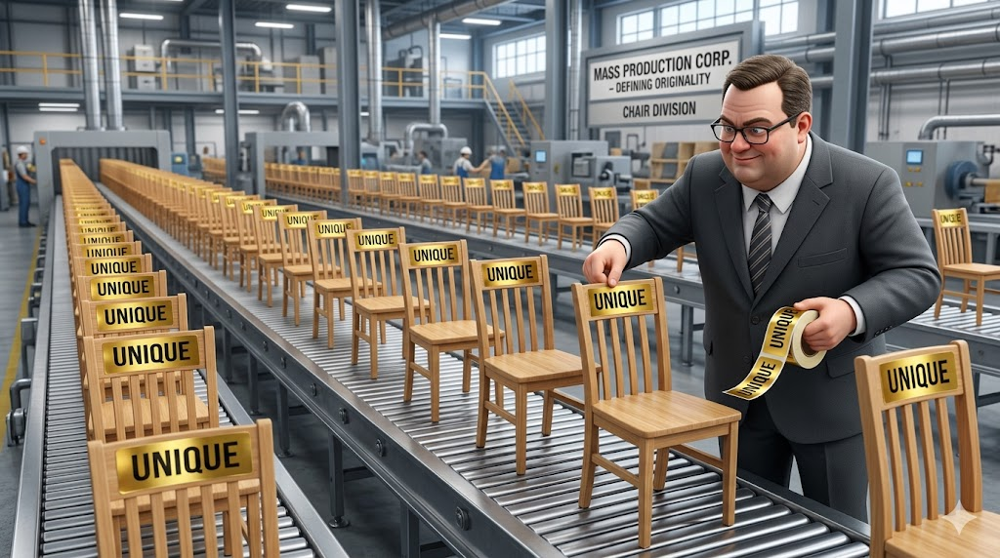

Когда издательства отзывают тиражи книг, профильные рынки обычно предпочитают этого не замечать, хотя именно в такие моменты стоило бы остановиться и прислушаться. Недавно прошла новость, которая предсказуемо пролетела мимо мебельной тусовки: с продажи снимают ряд изданий, среди которых оказалась весьма примечательная работа под названием «Общество копирования»Вальтера Беньямина
Здесь возникает весьма комичная ситуация. Для подавляющего большинства мебельщиков и их гениальных маркетологов это просто очередная книжка, которую они никогда не открывали, предпочитая читать посты про «100 способов повысить конверсию». А на самом деле внутри этого текста объясняется сама природа всего происходящего с ними на рынке. Причем объясняется не на примитивном уровне маркетинговых фишек, а на уровне базового устройства современного мира. И именно в этом месте появляется неприятная мысль, от которой владельцам мебельных бизнесов хочется поскорее отвернуться.

Большинство игроков сегодня барахтаются внутри проблем, природу которых они совершенно не понимают и поэтому не способны решить. Они жалуются на демпинг, злятся на клиентов, обсуждают недобросовестных конкурентов и требуют от своих рекламщиков придумать наконец-то какую-нибудь убойную фишку. При этом никто даже не пытается поменять саму модель мышления, генерирующую эти бесконечные страдания.
Отрасль живет в галлюцинации, которая давно протухла
Если сделать шаг назад и посмотреть на мебельный рынок без лишних эмоций, картина становится пугающе простой и невероятно вторичной. На практике все увлеченно копируют всех. Клиенты приходят с готовыми досками из Pinterest и прямым текстом требуют сделать точно так же. Салоны бдительно следят за соседями по торговому центру и оперативно выставляют аналогичные образцы. Производства без зазрения совести распиливают удачные модели конкурентов на лекала. А маркетплейсы просто сваливают все это великолепие в одну бесконечную ленту, окончательно стирая любые признаки индивидуальности.
И параллельно со всем этим карнавалом плагиата звучит бесконечная мантра маркетологов про уникальность, авторский подход, эксклюзивные решения и защиту коммерческой тайны. Ситуация, когда «нас скопировали», возводится в ранг трагедии и главной бизнес-проблемы. Хотя в объективной реальности проблема заключается совершенно в другом. Люди отчаянно пытаются выжить в модели, которая перестала существовать еще несколько лет назад.
Фундаментальная ошибка восприятия
В головах большинства участников рынка прочно засела примитивная конструкция, кажущаяся им незыблемой истиной. Согласно их вере, существует священный оригинал и существует жалкая копия, где оригинал обладает безусловной ценностью, а задача бизнеса сводится к созданию этого оригинала и его судорожной защите.
Подобная логика прекрасно работала в прошлом веке, когда информация распространялась со скоростью почтового вагона, доступ к технологиям был элитарным, а само копирование требовало колоссальных инвестиций времени и денег. Сегодня мы проснулись в абсолютно другой реальности: в привычном понимании оригиналов больше не существует.
Существует лишь непрерывный поток решений, мгновенно разлетающийся по планете. Имеет место насмотренность, формирующаяся у вашего клиента задолго до того, как он переступит порог вашего салона. Также существует рынок, на котором скорость копирования стремится к нулю, а в такой экосистеме попытка нащупать уникальность в самом куске МДФ становится не рабочей стратегией, а лишь формой психологического самоуспокоения.
Книга, которую вы не читали, говорит об этом прямо
Работа «Общество копирования» делает весьма радикальный, но предельно отрезвляющий ход. Она полностью аннулирует само противопоставление оригинала и копии, доказывая, что заимствование выступает не отклонением от нормы, а самой сутью нормы. Вся современная культура, любые бизнес-идеи, формы и продукты развиваются исключительно через бесконечное повторение, адаптацию и переработку.
Если перевести эту философскую мысль на язык мебельных фасадов, мы получим горький вывод. Ваш продукт не является уникальным вовсе не потому, что ваши дизайнеры плохо стараются. Причина кроется в самом устройстве системы, где физическая уникальность продукта больше не способна генерировать устойчивую ценность.
Там, где вы пытаетесь выстроить линию обороны, защищать банально нечего. Мебельщики с упорством, достойным лучшего применения, пытаются запатентовать воздух. Планировки мгновенно перерисовываются. Фрезеровки фасадов копируются производителями фрез за неделю. Цветовые комбинации воруются одним кликом мышки, и любые так называемые «авторские находки» живут ровно до того момента, пока счастливый заказчик не выложит их в свои социальные сети. Пытаться юридически или физически защитить внешний вид кухни сегодня так же глупо, как пытаться законодательно запретить людям вдохновляться. Именно из-за непонимания этого факта возникает хроническое выгорание руководителей: они тратят массу энергии на создание формы, а результат моментально утекает сквозь пальцы.
Настоящая война идет на другой территории
Если смахнуть со стола шелуху иллюзий об уникальном продукте, становится кристально ясно, где разворачивается реальная конкуренция. Борьба идет не за то, какую именно тумбочку вы спроектировали. Побеждает тот, кто лучше объяснил суть этой тумбочки, грамотно провел клиента через муки выбора, ювелирно снял все его скрытые страхи и без нервотрепки довел проект до финального монтажа.
Здесь напрашивается отличная параллель с принципами, описанными в бестселлере «Пиши, сокращай» (спойлер: о нем ежики слышали, но не читали и продолжают поливать свой кактус ненужного покупателям мебели контента) Сила смысла и пользы всегда бьет внешнюю мишуру, и читатель выбирает текст не за витиеватые прилагательные, а за решение своей боли. В мебельном бизнесе работают ровно те же законы: человек не покупает уникальную кухню, так как человек покупает понятное и безопасное решение своей бытовой задачи.
Клиент вообще не мыслит вашими категориями из брифов маркетологов, ведь перед ним не стоит жизненной цели найти самую неповторимую столешницу в городе. Его единственная настоящая задача заключается в том, чтобы не облажаться и не потерять деньги. В условиях же перенасыщенного рынка, как очень точно подмечено в книге «Парадокс выбора», избыток вариантов не делает потребителя счастливее, а лишь парализует его волю и плодит неврозы. И тогда испуганный покупатель начинает искать не самое лучшее, а самое надежное. Он ищет не гениально-оригинальное, а кристально понятное. В этот решающий момент кассу делает не автор самого изощренного дизайна, а компания, сумевшая стать для человека островком адекватности и уверенности.
Новая логика, отрицаемая неудачниками
Если ваши работы копируют, это вовсе не повод для истерики, ведь это прямое доказательство того, что ваш визуальный код стал частью языка рынка. Ваши повторенные кем-то решения означают лишь одно: вы задали отраслевой стандарт. Однако за этим кроется следующий уровень эволюции бизнеса, до которого дорастают лишь единицы. Правило звучит так: создатель языка всегда забирает деньги у тех, кто просто повторяет буквы.
Именно на этом этапе происходит жесткий раздел рынка. Однипредпочитают оставаться безликими фабриками: они штампуют мебель, которая ничем фундаментально не отличается от соседней, и обрекают себя на вечную кровавую баню скидок, демпинга и борьбы за крохи дешевого трафика.
Другиеэволюционируют в первоисточники: они формируют новые подходы к сервису, объясняют аудитории критерии правильного выбора и задают саму логику принятия решений. И тогда случается магия. Даже если каждую их петлю и каждый фасад скопировали конкуренты за углом, клиенты все равно несут деньги им. Люди готовы переплачивать, потому что они доверяют не куску ДСП, а выстроенной системе.
То, что невозможно украсть
Кухню можно перерисовать, а рендер можно украсть с сайта, яркий слоган можно переписать синонимами, но никто и никогда не сможет быстро скопировать то, как бьется сердце вашей компании. Ведь невозможно украсть вашу внутреннюю культуру принятия решений, глубину проектирования, стандарты общения с тяжелыми заказчиками и алгоритмы отработки неизбежных ошибок. Нельзя скопировать то чувство спокойствия, с которым вы доводите объект до состояния, когда клиент выдыхает и говорит: «Да, это именно то, что я хотел». Вся настоящая, железобетонная ценность бизнеса зашита именно в этих невидимых процессах.
Можно и дальше сливать бюджеты, рассуждая про уникальные торговые предложения, строчить гневные посты о плагиате и обижаться на несправедливый мир. Никто не запрещает вам страдать. Но это не приносит денег. Гораздо выгоднее задать себе другой вектор: перестать строить заборы и начать строить систему, которая делает вас безоговорочным победителем даже в условиях тотального копирования.
И да, чтобы мы были до конца честны. Большинство концепций, которые я сейчас озвучиваю и внедряю в консалтинговых проектах, не являются моими личными изобретениями в классическом смысле этого слова. Они были тщательно собраны, пропущены через практику и пересобраны заново. В том числе и из упомянутого «Общества копирования». И я не вижу в этом абсолютно никакой проблемы. Настоящая компетенция заключается не в том, чтобы рожать гениальные идеи в вакууме. Настоящая сила кроется в умении увидеть, как эти законы работают на практике, и жестко применить их там, где остальные продолжают воевать с ветряными мельницами.
Неизбежный финал
Мир уже окончательно превратился в глобальную сеть копий, и обратной дороги не предвидится. Исторически выигрывают не те безумцы, которые пытаются остановить этот каток голыми руками, а те, кто научился им управлять. Если посмотреть правде в глаза, у мебельного рынка сегодня нет никакого кризиса копирования - у него наблюдается глубочайший кризис понимания реальности.